Introdução
Contexto
Esse projeto foi desenvolvido para a disciplina de processamento de vídeo sob supervisão do docente Celso S. Kurashimaum para fins de avaliação de aplicação dos conceitos vistos em aula, tais como filtragem de imagens, processamento de cores, histograma e subtração de fundo. Foram então definidas etapas para elaboração do projeto e este é o relatório final desse projeto.
Para desenvolvimento do tema, inicialmente um grupo de pessoas que possui um sistema de câmeras foi entrevistado. Essas câmeras de segurança são instaladas na vizinhança de uma rua para monitoramento da movimentação das pessoas.
Objetivos
Os objetos deste projeto são aplicar conceitos de processamento de vídeo da disciplina, mostrando, em tempo real, um sistema de câmeras de segurança que detectem movimentos, emitam alarmes sonoros e visuais e que gravem os movimentos detectados. Ou seja, criar um sistema de segurança funcional que atenda às necessidades de monitoramento de uma vizinhança utilizando conceitos da disciplina de processamento de vídeo.
Materiais e métodos
Cenário de Aplicação (CA)
Para o cenário de aplicação, um grupo de pessoas da minha vizinhança foi entrevistado e foi discutido os conceitos da disciplina que melhor se aplicariam ao projeto. O cenário é então uma vizinhança que possua um sistema de câmeras de segurança, ou seja, um cenário aberto afetado pela variação de luminosidade natural (dia e noite), podendo ser aplicado também em qualquer outro ambiente para monitoramento.
Foi discutido como eu poderia utilizar os conceitos que presenciei em aula para auxiliar na melhora do sistema de vigilância. Primeiramente, foi sugerida a utilização da análise de movimento para detectar qualquer movimentação suspeita nas ruas em determinado período do dia (preferencialmente período noturno), emitindo um alerta, sonoro ou visual, caso as câmeras detectassem algo, podendo, inclusive, iniciar uma gravação enquanto houvesse a movimentação. As câmeras e o sistema de segurança estão distribuídos em algumas casas da vizinhança, porém, no período noturno, as câmeras podem não apresentar uma qualidade de imagem satisfatória. Por isso, sugeri a utilização de filtros para diminuir a granulação da imagem. Mostrei os resultados do experimento 2 e foi decidido que o melhor filtro seria o bilateral, pois os outros embaçavam muito a imagem. Também sugeri a utilização do processamento de cores para destacar tons de pele ou para aumentar a facilidade de visualização do trajeto dos objetos/pessoas em movimento. Como no perído noturno a visibilidade é baixa por conta da ausência de iluminação e aumento da quantidade de pixels pretos, sugeri também a equalização das imagens geradas pela câmera, tornando muito mais perceptível o que está ocorrendo no ambiente. Além disso, também foi solicitada uma forma de aviso visual.
Modelagem Funcional do Sistema de Processamento Visual (MFS)
O projeto foi desenvolvido em laboratório com auxilio de uma webcam e de um computador com Ubuntu, OpenCV e Python, onde o programa foi confeccionado e testado. Para fins de desenvolvimento do programa, a entrada deste consistirá dos frames provenientes da Webcam disponível no laboratório. Idealmente, a entrada do programa será as imagens de alguma câmera de segurança. De qualquer forma, as imagens provenientes de webcam ou da câmera serão transferidos e utilizados pelo programa para processamento das imagens.
O programa gerará duas saídas de vídeo, uma para os filtros diurno ou noturno e uma para o vídeo normal, sendo que o programa definirá, na prática, a partir do horário do sistema, qual dos filtros disponibilizar para o usuário. A saída do perído diurno consistirá de um filtro bilateral, processamento de cor e detecção de movimento. A saída do filtro noturno consistirá da equalização, para aumentar o contraste, já que a visibilidade durante esse período é reduzida, e da detecção de movimentos.
Além das saídas de vídeo, o programa ativará também as saídas sonoras através dos alto-falantes do computador e enviará um e-mail de alerta para o usuário. O filtro bilateral, estudado nos laboratórios, será utilizado para reduzir os ruídos das imagens e suavizá-las, tornando-as mais nítidas para possibilitar uma melhor análise, caso necessário. O processamento de cor será utilizado no período diurno, onde as cores são mais aparentes, para focar na cor da pele das pessoas cujo movimento for detectado. A ideia é que esse mecanismo possa ser acionado a qualquer momento a partir do pressionar de uma tecla. A parte principal do projeto consiste na aplicação prática da detecção de movimento, que será aplicado em ambas as saídas do programa a fim de detectar possiveis atividades suspeitas e alertar os usuários. A equalização será utilizada na saída noturna do programa para aumentar o contraste das imagens, já que estas apresentarão muitos pixeis pretos que dificultarão a análise das imagens.
Cronograma efetivo do desenvolvimento do SPV
Não houve um cronograma específico para elaboração do programa, ele foi elaborado e testado durante as aulas de Processamento Visual.
Abaixo se encontra um roteiro de construção do projeto, listando as funcionalidades e objetivos.
Checklist
- → Emitir som ao detectar movimento sem travar o restante do programa.
- → Enviar mensagem de e-mail ao detectar movimento.
- → Gravar vídeo apenas da movimentação (gravar em mais arquivos diferentes (não substituir o anterior, o nome do arquivo deve ser o horário inicial do ocorrido))
- → Gravar a saída normal e a saída diurna/noturna
- → Aguardar 10 segundos de movimento para emitir som, enviar mensagem e gravar vídeo
- → Exibir duas saídas de vídeo (sem filtro e diurno/noturno, a depender da hora do sistema)
- → Filtro noturno: Equalização
- → Filtro diurno: Filtro bilateral, Detecção de cor e Alternar entre esses dois ao pressionar uma tecla
- → Sair do programa ao pressionar Esc
Aplicação do SPV
A seguir se encontram, detalhadamente, instruções de como utilizar o programa e suas utilidades. Além disso, no anexo 5 se encontra um vídeo de demonstração dos resultados esperados.
- → Crie uma pasta e coloque os três arquivos nela (tempo_real_v4.py, enviador.py e soundfile.ogg).
- → Com a pasta aberta, clique com o botão direito do mouse dentro dela e abra o terminal do Ubuntu.
- → Execute os comandos para instalar as bibliotecas necessárias no terminal:
- → pip install datetime
- → pip install os-sys
- → pip install pygame
- → sudo apt install python3-numpy
- → pip install subprocess.run
- → Abra o programa enviador.py em um bloco de notas e, na variável "email_receiver", coloque seu endereço de e-mail (pode ser pessoal)
- → Rode o programa principal com python3 tempo_real_V4.py
Teste de som
Perídodo diurno
- → O programa principal é feito para ler o horário do sistema do usuário e detectar se está de dia ou de noite, aplicando automaticamente os respectivos filtros.
- → Como não podemos esperar muito para que isso ocorra, abre o programa no bloco de notas troque manualmente a variável "hora" na linha 33.
- → Para isso, comente o função "int(now.strftime("%H"))" (acrescente um # antes), ou
- → Apague a função "int(now.strftime("%H"))"
- → No lugar, coloque um número que represente o período diurno (entre 6 e 17)
- → O resultado deverá ser duas janelas, uma contendo a imagem filtrada (filtro bilateral) e uma sem filtro.
Perídodo noturno
- → Repita o processo anterior e troque a variável "hora" para um número entre 18 e 23 ou 0 e 5.
- → O resultado deverá ser duas janelas, uma contendo a imagem no modo noturno (equalizada) e uma sem filtro.
Recebimento de e-mail
- → Caso não tenha feito, abra o programa enviador.py em um bloco de notas e, na variável "email_receiver", coloque seu endereço de e-mail (pode ser pessoal).
- → O programa é feito para enviar um e-mail de alerta caso seja detectado movimento (uma vez por abertura de programa).
- → Verifique se recebeu algum e-mail (verifique também na caixa de spam).
Troca de filtro diurno
- → Abra o programa com o terminal no modo diurno (vide caso 3) e, com as janelas abertas, segura a tecla "t".
- → Uma das janelas deve ter trocado para o modo de detecção de tom de pele, verifique com mais integrantes do grupo.
Registro em vídeo
- → Abra o programa no terminal sem realizar movimentos em frente a câmera.
- → Após um breve momento, realize movimentos continuos e pare novamente.
- → Feche o programa e verifique a pasta onde estão os arquivos.
- → O programa deverá ter registrado dois vídeos, verifique aquele com nome "Normal.avi"
- → O vídeo deve ter registrado apenas o período de movimento.
- → Obs: O programa não realiza a gravação do filtro equalizado por limitações do OpenCV, mas grava o filtro diurno (tanto a detecção de cor quanto o bilateral), pode ser conferido em Filtro.avi.
- → Obs2: O programa grava novos vídeos por cima de vídeos antigos, tenha isso em mente ao alternar entre os períodos.
análise técnica
Em relação ao Cenário de aplicação, todas as funcionalidades propostas foram atendidas, principalmente com relação ao intuito de aplicar todos os conceitos obrigatórios da disciplina como especificado pelo docente.
Em relação ao checklist apresentado no cronograma efetivo do desenvolvimento do SPV, com exceção dos items "Aguardar 10 segundos de movimento para emitir som, enviar mensagem e gravar vídeo" e "gravar em mais arquivos diferentes", todos os outros foram atendidos com exito.
Essa falta de capacidade de implementação das ideias propostas se deve por alguns motivos, dentre eles: o fato do único tempo disponível para programação e teste do algoritmo ser laboratório, já que havia necessidade da utilização de webcam e do sistema linux, que não foi passível de reprodução nos computadores pessoais; A limitação do OpenCV como uma ferramenta exclusivamente visual e que não opera muito bem com funções operando em paralelo (como no caso da emissão de som, que congelava o resto da execução do programa e que necessitou de uma biblioteca específica para contornar o problema). Com um tempo maior de planejamento e com mais integrantes, talvez fosse possível cumprir com todas as funcionalidades propostas e talvez implementar mais algumas. Mesmo assim, o resultado foi satisfatório e atendeu às exigências.
Lista dos arquivos
Todos os arquivos se encontram neste Link do drive com os arquivos.
- Enviador.py
- tempo_real_V4.py
- soundfile.ogg
Análise dos Resultados do Teste de Campo TCS
Para realização da análise, foram criados os testes presentes no capítulo de aplicação do SPV, onde, a partir deles, foi criada a AQA, como consta no anexo 6. A finalidade dos testes e das perguntas é de verificar se os participantes compreenderam todas as funcionalidades e limitações do programa, a fim de compreender também sua aplicabilidade e sugerir melhorias.
No formulário, os participantes foram avaliados conforme suas respostas. Foram seis perguntas no total, sendo que as três últimas tinham mais peso que as primeiras, e a última com o maior peso de todas por verificar se o participante compreendeu a limitação do programa com relação à conversão do filtro equalizador para uma saída mp4.
O teste 1 (teste de som) tem como objetivo verificar se o participante foi capaz de perceber o som e quando ele ocorre (o que ativa-o).
Os teste 2 e 3 (período diurno e noturno) têm como objetivo verificar se ele compreendeu o funcionamento dos filtros e das saídas, do motivo da escolha dos filtros para cada período e de sua aplicação na prática.
O teste 4 (recebimento de e-mail) tem como objetivo verificar se ele compreendeu como funciona o código por trás do envio do e-mail e sobre como customizá-lo.
O teste 5 (Troca de filtro diurno) tem como objetivo verificar se ele compreendeu o motivo da utilização da detecção de cores no projeto e sobre como realizar essa troca de filtros.
O teste 6 (registro em vídeo) tem como objetivo verificar se ele compreendeu as limitações da gravação de vídeo do OpenCV, uma vez que a saída diurna filtrada não é convertida pelo programa em MP4.
Através do anexo 7, é possível notar que nem todos os alunos participaram do teste do programa, é possível notar também que apenas um deles compreendeu completamente as funcionalidades dele. Isso pode ter sido causado tanto por um problema de comunicação durante a explicação do projeto, confusão com relação ao quê as perguntas se referiam, ou até desisteresse. A média final dos participantes foi de 8,6, o que pode ser considerado um índice bom.
Conclusões
Concluindo, com esse projeto foi possível explorar muito mais as possibilidades do OpenCV e do processamento de vídeo através de uma aplicação prática realizada pelo grupo e através de todos os outros projetos realizados pelos outros alunos, também muito criativos e interessantes. Através da enquete do anexo 8, foi possível notar que todos gostaram deste projeto e, dentre as críticas, se destacam a utilidade do projeto e a possibilidade de diminuir a área de detecção do detector de movimentos para disparar o alarme apenas para movimentos mais expressivos, o que foi aplicado modificando a linha 67 na segunda imagem do anexo 3. Esse projeto foi de grande ajuda para entendermos melhor a funcionalidade do processamento de vídeo e também a entender como muito dos serviços que temos hoje funciona, sendo uma grande experiência.
Referências Bibliográficas
- → How to Send Emails with Python [New Method 2023] - The PyCoach
- → Material disponibilizado pelo docente da disciplina.
- → pygame module for loading and playing sounds - pygame
- → datetime — Basic date and time types - python
- → subprocess — Subprocess management - python
- → COMO TRABALHAR COM TEMPO NO PYTHON – BIBLIOTECA DATETIME - Hashtag treinamentos
- → Motion Detection OpenCV Python - Hack The Developer
Anexos
Anexo 1 - Contexto - sistema de câmeras
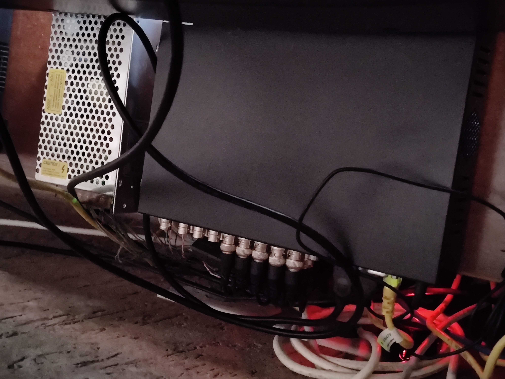 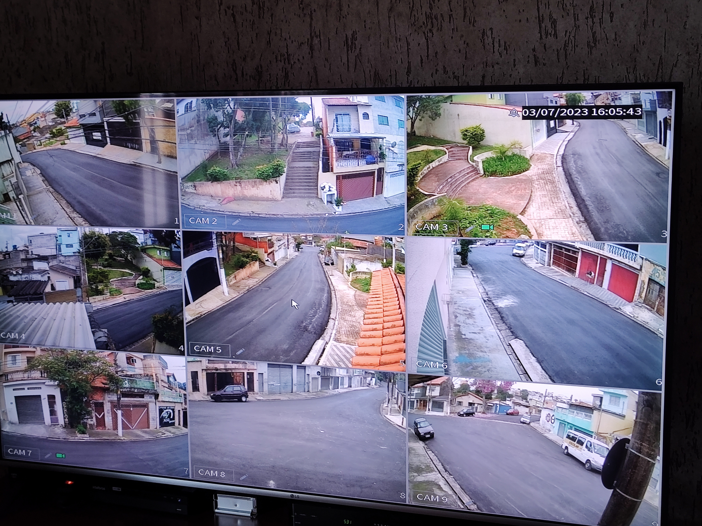
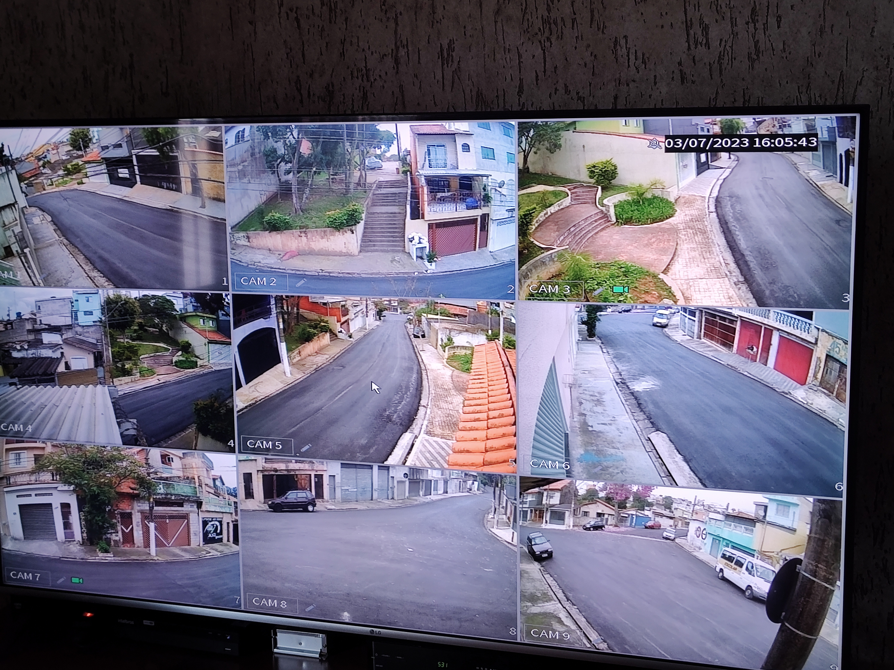
Anexo 2 - Diagrama do programa
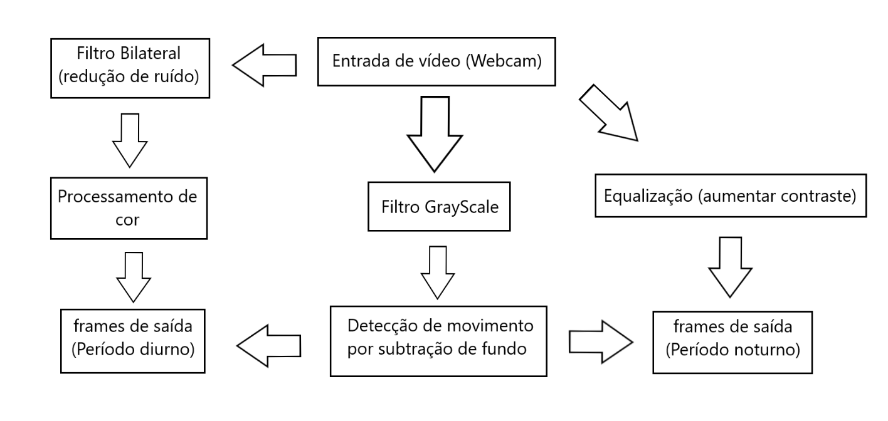Anexo 3 - Script do programa principal
 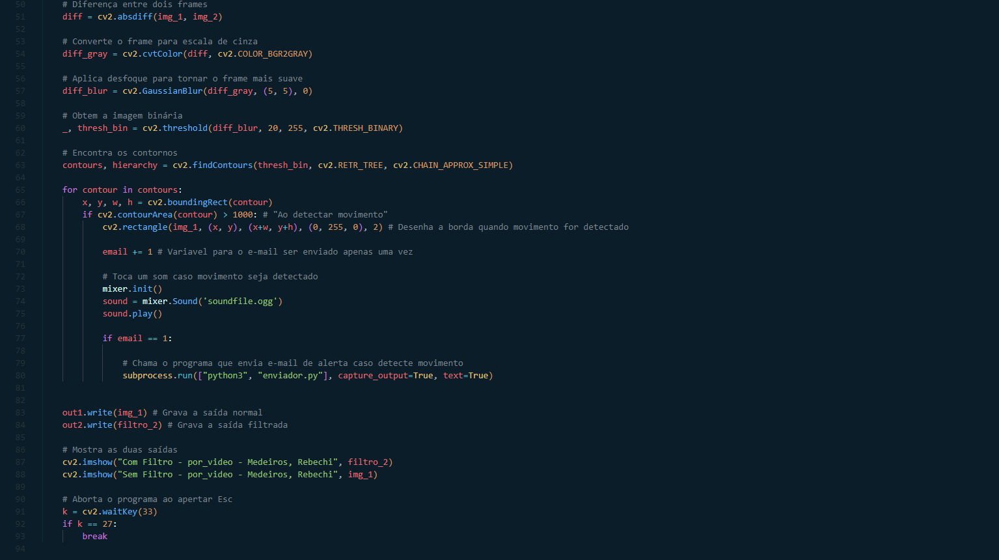
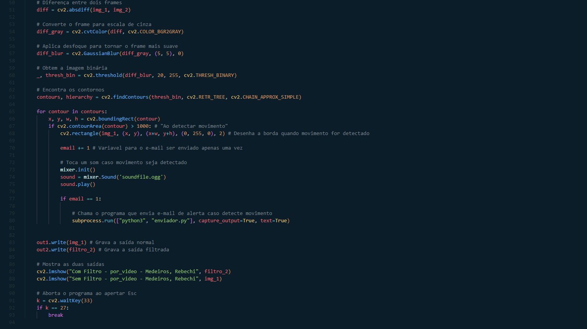
Anexo 4 - Script do programa que envia e-mails
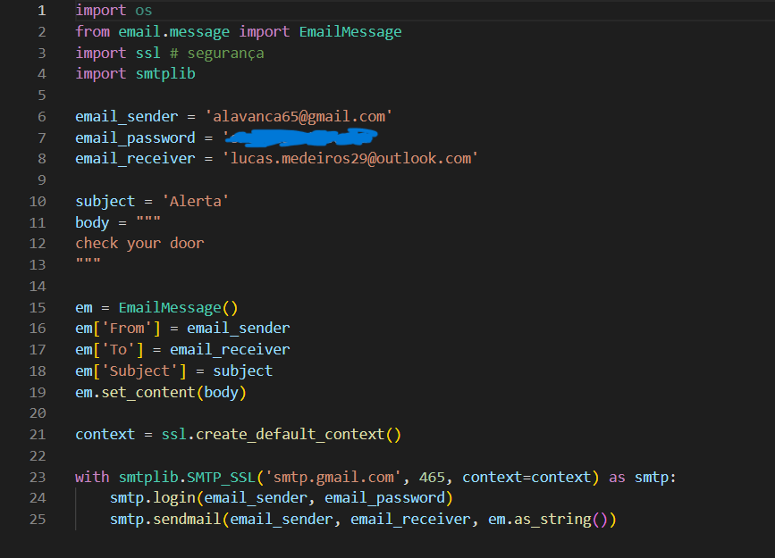Anexo 5 - Vídeo de demonstração do programa
Anexo 6 - AQA
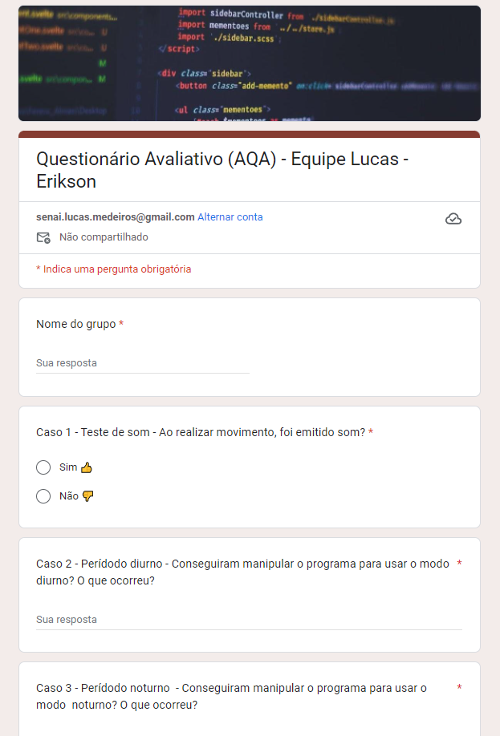 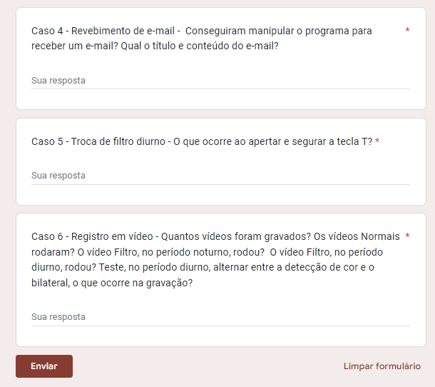Anexo 7 - Avaliação do AQA
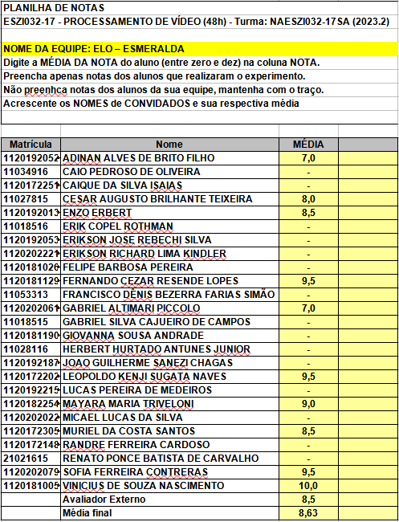Anexo 8 - Enquete
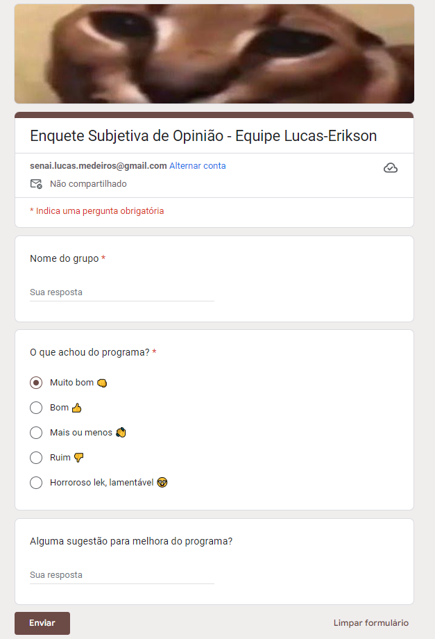Anexo 9 - Respostas da enquete
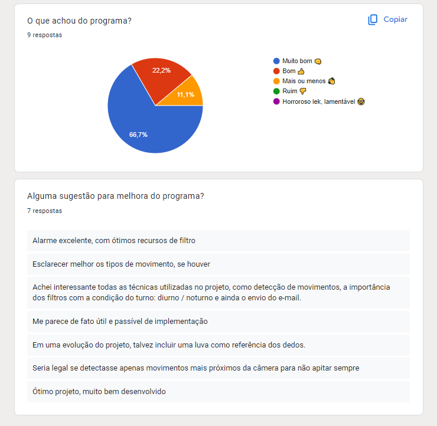